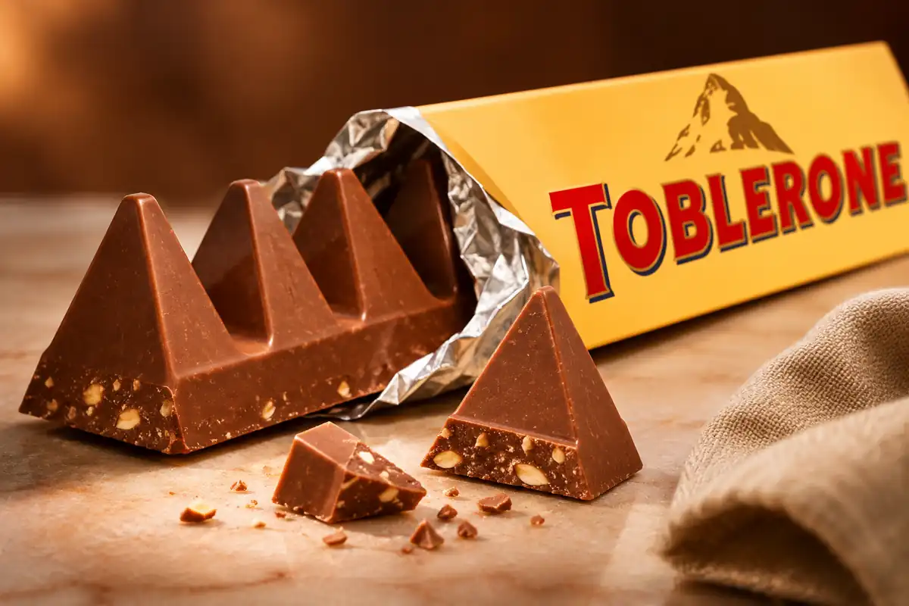

ZAFARRANCHO · ACCESORIOS
Gorra Zafarrancho Mundial
Gorra ajustable en celeste y blanco. Cuatro estampas: La Copa, Argentina, Zafarrancho y El Sol.
$10.000Precio minorista oficial · referencia
Ver producto

Un universo de sabores para regalarte un momento distinto. Chocolates, dulces y especialidades elegidas con ganas de sorprender.
Bocaditos, chocolates, golosinas y dulce de leche de Merengo. Explorá la colección por categoría.
Una selección de especialidades de Merengo, sin alfajores.
Cargando el catálogo de Merengo...
Precios publicados por Merengo en su tienda oficial al 17/11/2026. Son referencias para la maqueta de Mokka, no precios de venta aprobados ni stock confirmado. La compra se realizará mediante Tiendanube cuando el catálogo real esté conectado. Las fotografías proceden del sitio del fabricante y su uso comercial deberá autorizarse.
Zafarrancho no tiene otros alimentos publicados fuera de los alfajores, pero sí dos accesorios oficiales. Los presentamos aparte de las especialidades gastronómicas.
Gorra ajustable en celeste y blanco. Cuatro estampas: La Copa, Argentina, Zafarrancho y El Sol.
Plancha de stickers resistentes al agua, con relieve y acabado brillante para superficies lisas.
Zafarrancho publica estos dos accesorios, pero no publica otros alimentos que no sean alfajores. Las imágenes son símbolos ilustrativos, no fotografías del producto; la foto oficial se consulta en el enlace del fabricante. Los importes son precios minoristas de Zafarrancho y no ofertas ni stock confirmado de Mokka.
Merengo también menciona especialidades navideñas, pero su categoría oficial no muestra productos publicados actualmente. Las incorporaremos cuando haya presentaciones y disponibilidad verificadas.